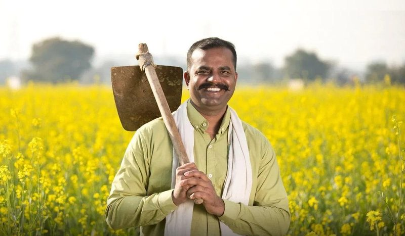
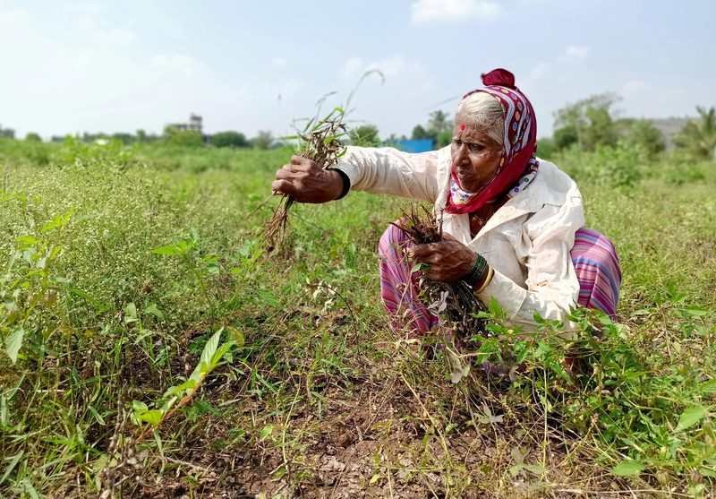
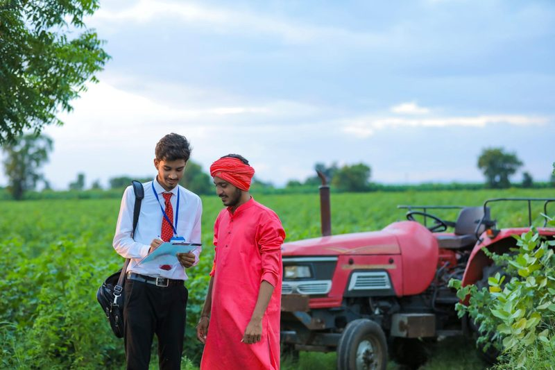
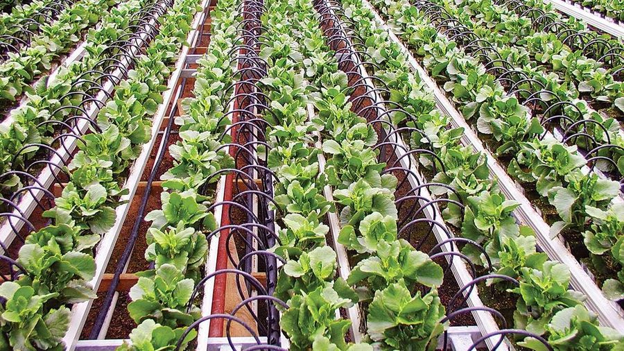
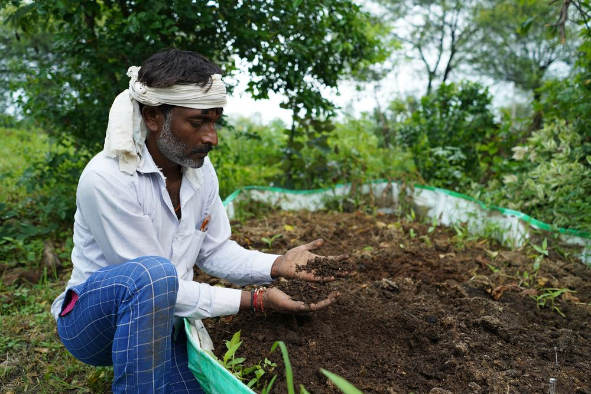
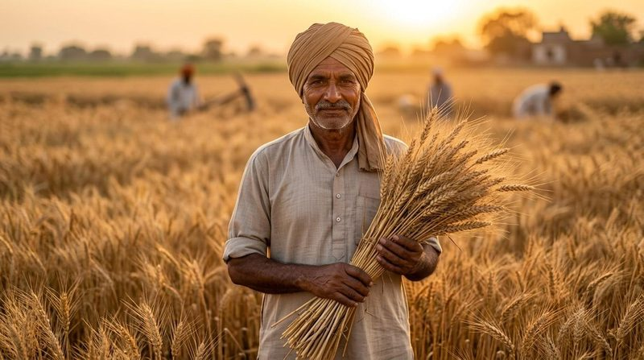
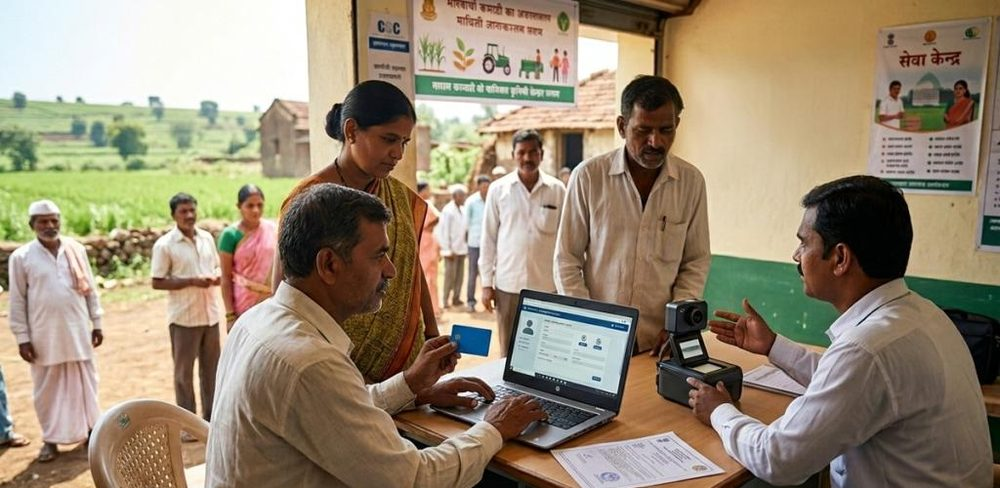

GOVERNMENT AGRICULTURE SCHEMES
Empowering Farmers Through Government Support
Explore government initiatives, financial assistance, crop insurance and agricultural support programs designed for farmers.
Explore All SchemesPopular Schemes
Popular Agriculture Schemes
Government initiatives helping farmers grow financially.

PM-KISAN Samman Nidhi
Direct income support for landholding farmer families.
Key Benefits
- ₹6,000 per year, paid in three instalments of ₹2,000
- Money goes straight to the bank account (DBT)
Eligibility

Pradhan Mantri Fasal Bima Yojana
Crop insurance against loss from natural calamities, pests and diseases.
Key Benefits
- Farmer pays only 2% (Kharif), 1.5% (Rabi) or 5% (commercial and horticultural crops) of the sum insured
- Rest of the premium is subsidised by the Government
Eligibility

Kisan Credit Card (KCC)
Easy, low-interest credit for crop and farming needs.
Key Benefits
- Short-term loans at about 7% interest, effective rate can drop to about 4% with prompt repayment
- Collateral-free credit up to ₹2 lakh per borrower
Eligibility

PM Krishi Sinchayee Yojana
Water-saving micro irrigation under “Per Drop More Crop”.
Key Benefits
- 55% subsidy for small and marginal farmers, 45% for other farmers on drip and sprinkler systems
- Support up to 5 hectares per farmer
Eligibility

Soil Health Card Scheme
Know your soil and use the right fertilizer in the right quantity.
Key Benefits
- Free soil testing and a Soil Health Card
- Crop-wise nutrient advice; card renewed every 2 years
Eligibility

Agriculture Infrastructure Fund
Loans for post-harvest and community farming infrastructure.
Key Benefits
- 3% per year interest subvention on loans up to ₹2 crore, for up to 7 years
- Credit guarantee cover (CGTMSE) on eligible loans up to ₹2 crore
Eligibility
Amounts, rates and eligibility are as per the latest official information we checked (November 2026) and can change. Please confirm on the official portal or at your nearest agriculture office or bank before you apply.

Application Guide
How to Apply for Government Schemes?
Select the Scheme
Select the relevant government scheme.
Check Eligibility and Documents
Check eligibility and required documents.
Apply on the Official Portal
Complete the application through the official portal.
Track Your Application
Track your application status.
Checklist
Documents Required
Aadhaar Card
Land Ownership Records
where applicable
Bank Account Details
Passport Size Photograph
Other Scheme-specific Documents
Empowering Farmers, Building a Better Future
Explore government support programs and discover opportunities to grow your agricultural journey.
Explore Government Schemes